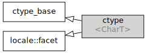

std::ctype
From cppreference.com
| Defined in header
<locale>
|
||
| template< class CharT >
class ctype; |
||
Class ctype encapsulates character classification features. All stream input operations performed through std::basic_istream<charT> use the std::ctype<charT> of the locale imbued in the stream to identify whitespace characters for input tokenization. Stream output operations apply std::ctype<charT>::widen() to narrow-character arguments prior to output.


Inheritance diagram
Two specializations are provided by the standard library
| Defined in header
<locale> |
|
| std::ctype<char> | provides equivalents of the "C" locale classification. This specialization uses table lookup for character classification |
| std::ctype<wchar_t> | provides wide character equivalents of the "C" locale classification |
Contents |
[edit] Member types
| Member type | Definition |
char_type
|
CharT
|
[edit] Member functions
| constructs a new ctype facet (public member function) |
|
| destructs a ctype facet (protected member function) |
|
invokes do_is (public member function) |
|
invokes do_scan_is (public member function) |
|
invokes do_scan_not (public member function) |
|
invokes do_toupper (public member function) |
|
invokes do_tolower (public member function) |
|
invokes do_widen (public member function) |
|
invokes do_narrow (public member function) |
|
[edit] Member objects
|
static std::locale::id id |
id of the locale (public member object) |
[edit] Protected member functions
| [virtual]
|
classifies a character or a character sequence (virtual protected member function) |
| [virtual]
|
locates the first character in a sequence that conforms to given classification (virtual protected member function) |
| [virtual]
|
locates the first character in a sequence that fails given classification (virtual protected member function) |
| [virtual]
|
converts a character or characters to uppercase (virtual protected member function) |
| [virtual]
|
converts a character or characters to lowercase (virtual protected member function) |
| [virtual]
|
converts a character or characters from char to charT (virtual protected member function) |
| [virtual]
|
converts a character or characters from charT to char (virtual protected member function) |
Inherited from std::ctype_base
Member types
| Type | Definition |
mask
|
unspecified bitmask type (enumeration, integer type, or bitset) |
Member constants
| space
[static]
|
the value of mask identifying whitespace character classification (public static member constant) |
| print
[static]
|
the value of mask identifying printable character classification (public static member constant) |
| cntrl
[static]
|
the value of mask identifying control character classification (public static member constant) |
| upper
[static]
|
the value of mask identifying uppercase character classification (public static member constant) |
| lower
[static]
|
the value of mask identifying lowercase character classification (public static member constant) |
| alpha
[static]
|
the value of mask identifying alphabetic character classification (public static member constant) |
| digit
[static]
|
the value of mask identifying digit character classification (public static member constant) |
| punct
[static]
|
the value of mask identifying punctuation character classification (public static member constant) |
| xdigit
[static]
|
the value of mask identifying hexadecimal digit character classification (public static member constant) |
| blank
[static] (C++11)
|
the value of mask identifying blank character classification (public static member constant) |
| alnum
[static]
|
alpha | digit (public static member constant) |
| graph
[static]
|
alnum | punct (public static member constant) |
[edit] Example
The following example demonstrates modification of a ctype other than ctype<char> to tokenize of a CSV file
#include <iostream> #include <locale> #include <sstream> struct csv_whitespace : std::ctype<wchar_t> { bool do_is(mask m, char_type c) const { if ((m & space) && c == L' ') { return false; // space will NOT be classified as whitespace } if ((m & space) && c == L',') { return true; // comma will be classified as whitespace } return ctype::do_is(m, c); // leave the rest to the parent class } }; int main() { std::wstring in = L"Column 1,Column 2,Column 3\n123,456,789"; std::wstring token; std::wcout << "default locale:\n"; std::wistringstream s1(in); while (s1 >> token) { std::wcout << " " << token << '\n'; } std::wcout << "locale with modified ctype:\n"; std::wistringstream s2(in); s2.imbue(std::locale(s2.getloc(), new csv_whitespace())); while (s2 >> token) { std::wcout << " " << token<< '\n'; } }
Output:
default locale: Column 1,Column 2,Column 3 123,456,789 locale with modified ctype: Column 1 Column 2 Column 3 123 456 789
[edit] See also
| specialization of std::ctype for type char (class template specialization) |
|
| defines character classification categories (class template) |
|
| creates a ctype facet for the named locale (class template) |
|